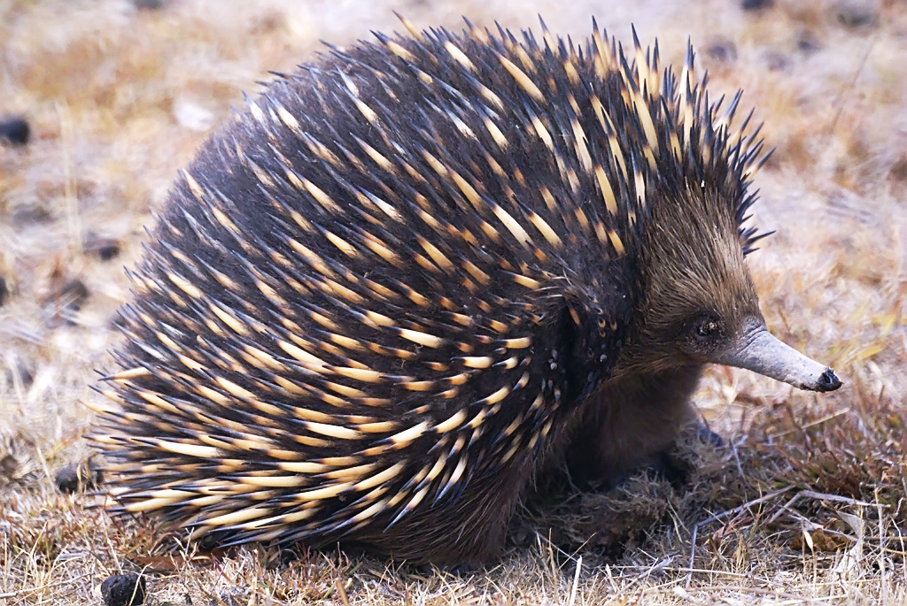
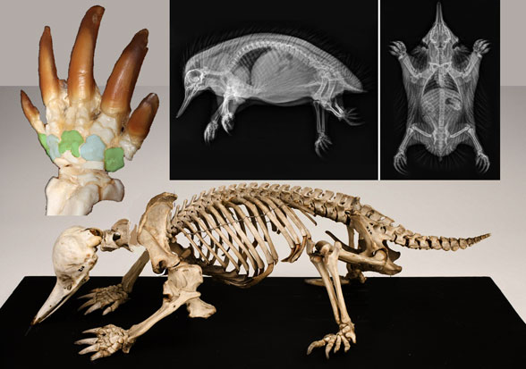

The echidna (ih-KID-na), sometimes called a "spiny anteater", is an egg-laying mammal. These are called monotremes and there are only five in the world: four echidna species, and one platypus species.

Echidnas inhabit scrubland, desert, and montane forest in Australia, Tasmania, Indonesia, and Papua New Guinea. The nostrils at the tip of the beak help the echidna sniff out its next meal. The rubbery snout is also sensitive to electrical signals from an insect's body. It is strong enough to break open hollow logs and plow up the forest floor in search of insects.

Like anteaters, the echidna has no teeth. Instead, it uses it's long, sticky tongue to catch and chew its food: ants, termites, or earthworms. Once food is located, the echidna tears into the mound or nest with its large, sharp claws and then uses the 6-inch tongue to lap up the bugs or worms. Hard pads at the base of the tongue and on the roof of the mouth grind the food into a paste for swallowing.